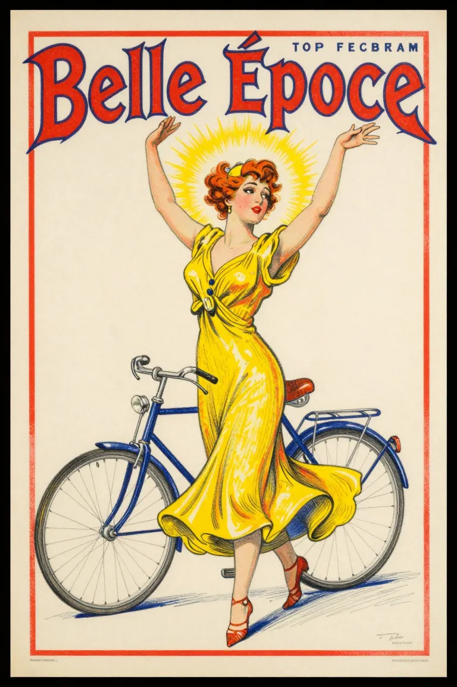

A large poster drawn in crayon and brush on stones, one stone for each colour. Jules Chéret opened his own press in Paris in 1866 and printed colour posters with a few strong inks; Mucha, Toulouse-Lautrec and the Beggarstaffs made the street a gallery.

Core thesis
A few bright inks, drawn by the artist on stone, can make a sheet on a wall as bright and as alive as a painting.
Design principles
Use 3–5 inks: a dark key for the drawing, a red, a yellow and a blue, with mixed tones where they overprint.
Draw the key with a lithographic crayon, so the tone has the grain of the stone.
Make one large figure, often a woman in motion, fill most of the sheet.
Put the name of the product or the show in hand-drawn letters at the top or the bottom, in the same inks.
Use spatter (crachis) and crayon grain for the half tones; keep flat colour for large areas.
Let the colours shift a little from the key; the eye accepts a small misregister.